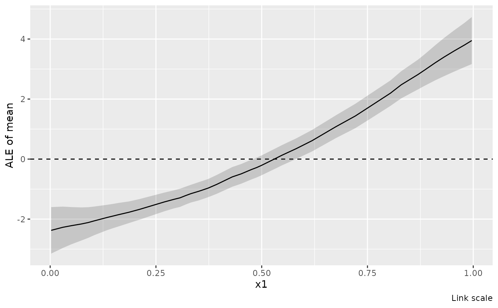
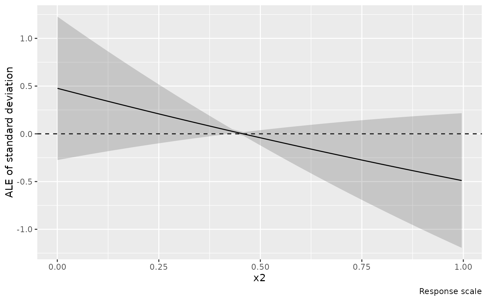

Calculate one-dimensional accumulated local effects (ALE) of a numeric covariate, combining all model terms involving that covariate.
Usage
ale(object, ...)
# Default S3 method
ale(object, ...)
# S3 method for class 'gam'
ale(
object,
focal,
data = NULL,
scale = c("link", "response", "linear_predictor"),
n_bins = 40L,
breaks = NULL,
parameter = NULL,
which_eta = NULL,
center = TRUE,
interval = c("confidence", "simultaneous"),
ci_level = 0.95,
unconditional = FALSE,
frequentist = FALSE,
n_sim = 10000L,
n_cores = 1L,
seed = NULL,
block_size = 10000L,
exclude = NULL,
envir = NULL,
...
)
# S3 method for class 'bam'
ale(object, ...)
# S3 method for class 'scam'
ale(object, ..., unconditional = FALSE)Arguments
- object
a model fitted by
mgcv::gam()ormgcv::bam().- ...
named prediction controls passed to
mgcv::predict.gam(). Data, type, term selection, row handling and uncertainty arguments are reserved.- focal
character; the name of one raw numeric model covariate.
- data
optional reference data. Each row receives equal weight. By default, use the observations retained during fitting. Responses are not required. Supply raw covariates, including inputs to model expressions.
- scale
character;
"link"(default),"response", or"linear_predictor", an alias for"link".- n_bins
positive integer; requested number of intervals. Empirical quantiles (
type = 1) define boundaries; ties can reduce the number used.- breaks
optional numeric interval boundaries, overriding
n_bins. These must increase strictly, span exactly the reference range, and produce no empty intervals.- parameter
character; one distribution parameter, using the names and aliases accepted by
link().NULLselects the first parameter.- which_eta
optional integer selecting a linear predictor instead of
parameter. If both are supplied they must select the same predictor.- center
logical; subtract the empirical mean of the interpolated ALE curve over the reference observations? If
FALSE, anchor the curve at zero at the first boundary.- interval
character;
"confidence"for pointwise intervals or"simultaneous"for bands covering all returned boundaries of this curve.- ci_level
numeric; interval coverage, strictly between zero and one.
- unconditional
logical; include smoothing parameter uncertainty if available. Otherwise
get_vcov()warns and uses the uncorrected covariance.- frequentist
logical; use the frequentist coefficient covariance?
- n_sim, n_cores
positive integers; simulation count and number of cores for simultaneous intervals. Ignored for pointwise intervals.
- seed
optional integer seed for simultaneous intervals. An explicit seed preserves the caller's random-number state around interval simulation.
- block_size
positive integer; maximum reference rows in each prediction block. Blocks can run in parallel when workers are configured; see Details.
- exclude
character; model terms to exclude, as in
mgcv::predict.gam().- envir
optional environment for functions and constants in model expressions; see
smooth_estimates().
Value
A tibble of class "ale", with .focal and .parameter identifying
the curve, .value giving boundary coordinates, .ale the effects, .se
their standard errors, .crit the interval critical value, and .lower_ci
and .upper_ci the interval limits. .bin identifies the interval ending
at each boundary and .n counts its reference rows. At the initial boundary
both are zero. The ale_info attribute records computation settings without
retaining the model or reference data.
Details
Within each interval, predict at its two boundaries for every reference observation in that interval, retaining its other covariates. Average the upper-minus-lower prediction differences, then accumulate these averages. Intervals are right closed, with the minimum included in the first interval. The returned curve is linearly interpolated between boundaries. Centring subtracts its mean evaluated at the reference observations, rather than an unweighted mean over boundaries. Fitting weights do not weight these averages.
On the response scale, transform endpoint predictions before differencing. Transforming a link-scale ALE curve does not produce response-scale ALE. Response-scale effects are differences in natural parameter units, not predicted parameter values, and can be negative.
Distributional families gaulss, gammals, gumbls, gevlss, shash,
twlss, and ziplss are supported. Natural units mean standard deviation
for Gaussian scale, positive scale or dispersion for logged scales, natural
Tweedie power, positive sinh-arcsinh tail parameter, and Poisson rate or
probability of presence for ziplss. Location parameters need not be response
means. Overall means combining several parameters, multinomial probabilities,
multivariate covariance parameters and grouped-family outputs are unsupported.
For other families, link-scale ALE is available for a single linear predictor;
response-scale ALE requires a supported scalar mean family.
Supported response-scale parameters are:
gaulss: location (mean) and scale (standard deviation);gammals: location (mean) and scale (dispersion);gumblsandgevlss: location and positive scale, plus GEV shape;shash: location, positive scale, skewness and positive tail parameter (namedkurtosisto match gratia's parameter names);twlss: location (mean), power and scale (dispersion);ziplss: location (Poisson rate) andpi(probability of presence).
Raw-data recovery can require envir when a model was fitted locally and
its formula no longer retains the environment containing the fitting data.
Alternatively, supply reference data explicitly.
Coefficient gradients are averaged, accumulated and centred in the same way as the effects, retaining covariance across intervals and the centring constant. Link-scale gradients are exact; response-scale intervals use the delta method. Both interval types condition on the reference observations and boundaries. Simultaneous coverage concerns the returned boundaries, not all points between them. No uncertainty for the reference distribution is added.
Formula offsets are included and reevaluated at interval boundaries. Offsets
supplied only through the fitting function's offset argument are omitted,
following explicit-newdata prediction semantics. BAM predictions use
discrete = FALSE, including for models fitted with discrete = TRUE.
Prediction blocks use an existing pool of workers configured with
mirai::daemons(), when mirai and carrier are installed. Set block_size
small enough to give each worker a block; serial and parallel calculations
retain the same block boundaries and accumulation order. Worker startup and
model transfer can outweigh the benefit for small models or reference data.
The caller owns the pool; ale() does not start or stop workers.
n_cores controls coefficient simulation for simultaneous intervals, not the
number of prediction workers. Workers use their configured BLAS thread limits.
Data recovery and validation, centring, covariance calculations and interval simulation remain in the caller. Simultaneous bands use one shared set of coefficient deviations for all boundaries, preserving results and the caller's random-number state across worker counts. Models requiring custom prediction methods, family callbacks, contrasts or formula functions that workers cannot safely evaluate retain serial prediction. Standard arithmetic and common base and stats transformations can run on workers; local helpers, stochastic expressions, custom S3 transformation methods and other package functions retain serial prediction. Method checks do not invoke active or lazy caller bindings.
This implementation is written independently from the published ALE definition, without using code from mgcViz or ALEPlot.
References
Apley, D. W. and Zhu, J. (2020). Visualizing the effects of predictor variables in black box supervised learning models. Journal of the Royal Statistical Society: Series B, 82, 1059–1086. doi:10.1111/rssb.12377 .
Examples
library("mgcv")
df <- data_sim("eg1", n = 200, seed = 42)
m <- gam(y ~ s(x0) + te(x1, x2, k = c(5, 5)) + s(x3),
data = df, method = "REML")
a <- ale(m, focal = "x1")
draw(a)

# Standard deviation in its natural units, rather than reciprocal SD
ml <- gam(list(y ~ s(x1), ~ x2), data = df, family = gaulss())
ale(ml, "x2", parameter = "scale", scale = "response") |> draw()
